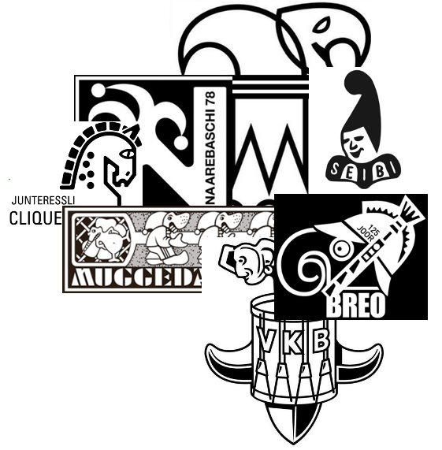
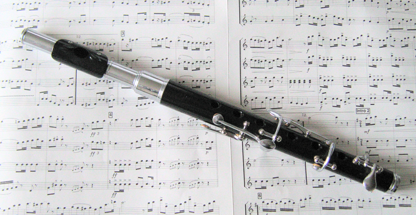
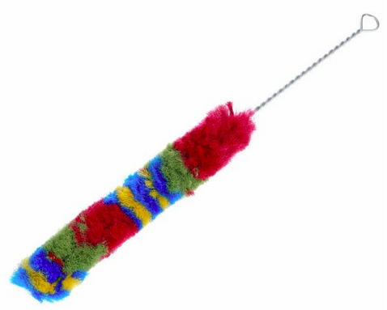
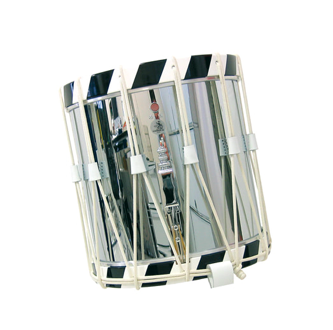
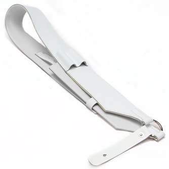
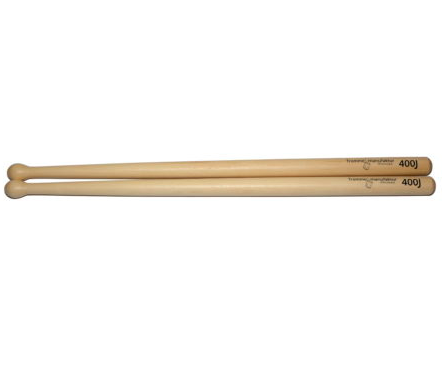
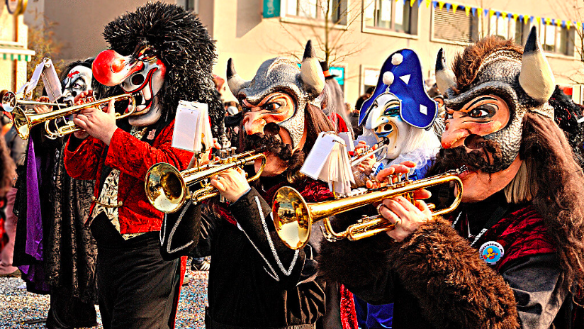
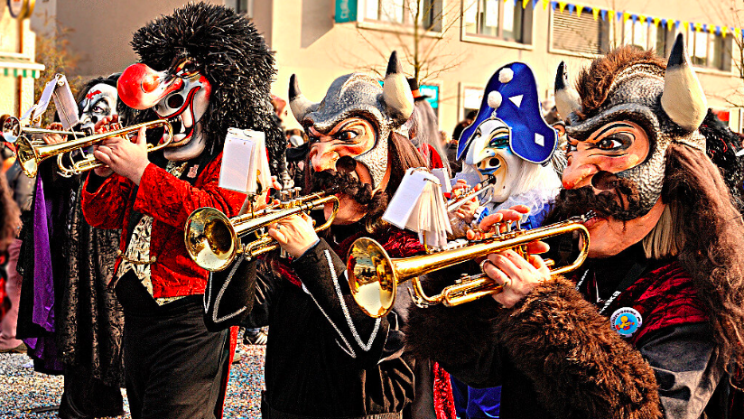

Instrumente
Clique
Eine Fasnachtsclique (oft kurz Clique, aber auch Fasnachtsgesellschaft genannt) ist eine Trommel- und Pfeifergruppe, die an der Basler Fasnacht teilnimmt. Fasnachtsclique wird einerseits die musizierende Formation, andererseits aber auch der gesamte Verein genannt.
Die Seibi und Breo Clique an der Fasnacht 2022.
Die Seibi und Breo Clique an der Fasnacht 2022.

Basler Piccolo
Das Basler Piccolo ist als solches nie erfunden worden, sondern war ursprünglich nichts Anderes, als eine halbe «normale» Querflöte – eben eine Piccolo-Querflöte. Erste Erwähnungen fand die «flûte à l’octave» 1735 in Frankreich, wenig später in Deutschland.
Einige Jahre später tauchten Orchesterbesetzungen auf, die ein Piccolo vorschrieben. Während das Piccolo im Orchester sich vor allem aufgrund der revolutionären Neuerung Theobald Böhms an der Querflöte weiterentwickelte, bediente man sich in der Volksmusik und beim Militär weiterhin des bewährten, mit nur wenigen Klappen versehenen alten Modells.
In Basel tauchten erste Zeugnisse von Pfeifern erst um 1850 auf. Bis zum Zweiten Weltkrieg spielten die Pfeifer in Basel nur eine untergeordnete Rolle. Was man heute als Pfeiferkunst geniessen kann, ist das Ergebnis einer rasanten Entwicklung seit den fünfziger Jahren. Als Folge anspruchsvoller Kompositionen entstand der Bedarf nach besser gestimmten und in der tiefen Lage voller klingenden Instrumenten.
Das Basler Piccolo ist eine Oktavflöte mit 6 Klappen und 6 Grifflöchern und wurde im 18. Jahrhundert erstmals gebaut. In den 1960er Jahren wurde es weiterentwickelt und wird heute in 2 unterschiedlichen Bohrungen (Mensuren) gefertigt: dass etwas enger mensurierte Basler Dybli und das grossgebohrte Modell Spezial.


Basler Trommel
Die älteste erhaltene Trommel stammt aus dem Jahre 1571. Sie steht im Basler Musikmuseum. Das schweizerische Brauchtum und Feste wie z. B. die Fasnacht, das Zunftleben und öffentliche Anlässe mit Tanz, Spiel und Unterhaltung wurden meistens von Trommelklängen begleitet.
Bis ins 19. Jahrhundert wiesen Marschtrommeln in Europa und in den Kolonien ganz allgemein diese Bauart auf. Entsprechend sind solche Trommeln auch immer wieder z. B. in Wildwestfilmen zu sehen, die in der Zeit des amerikanischen Bürgerkriegs spielen. Auch bei Auftritten von Gruppen, die sich der Musik aus jener Zeit verschrieben haben, werden allgemein solche Trommeln benutzt. Die Weiterentwicklung der Marschtrommel ging dann in die Richtung, dass etwa seit Beginn des 19. Jahrhunderts die Seile durch einen Spannmechanismus mit Metallschrauben ersetzt und die Zargen immer kürzer wurden. Die Basler Trommel blieb bei der alten Bauart.
Die Trommel ist immer schräg vor dem Tambour. Da die Halterung der Trommel auf der linken Seite ist (Bandalier; das breite Lederband, das über die Schulter getragen wird), verläuft sie somit von rechts oben nach links unten (aus der Sicht des Tambours).
Um die Trommel zu spielen, halten die Tambouren zwei (Holz-)Schlägel in den Händen. Die rechte Hand umschliesst den Schlegel komplett und hält ihn abgewinkelt (so dass die Hand mit dem Unterarm in einer Linie steht). Auf der linken Hand wird der Schlägel mit Zeige-, Mittelfinger und Daumen gehalten und liegt auf dem Ringfinger.



Guggenmusik
Unter Guggenmusik versteht man Blasmusik, die meist im alemannischen Raum in der Fasnacht gespielt wird.
Sie wird in der Schweiz und in Süddeutschland auch „Guggemoseg“, „Guuggemusig“ (in der Zentralschweiz), „Guggamusik“ (in Vorarlberg), „Guggumüsig“ (im Kanton Wallis) oder „Chatzemusig“ (Katzenmusik) genannt. Es handelt sich um eine stark rhythmisch unterlegte, auf ihre eigene, sehr spezifische Art „falsch“ bzw. „schräg“ gespielte Blasmusik. Die Musiker sind dabei oft verkleidet und teilweise maskiert.
Der Begriff leitet sich vermutlich her von „Gugge“, was im Alemannischen für Tüte steht. Er ist aber nicht zu verwechseln mit dem schweizerdeutschen „Guuge“ für alle Arten von (Blech)blasinstrumenten. Eine „Guggemusig“ bezeichnet somit eine Gruppe von Leuten, die zusammen musiziert, während sie einfache Masken – damals Tüten, welche in Basel und Umgebung ebenfalls Guggen heißen – trugen.

